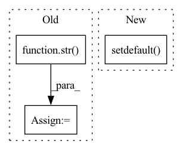

Pattern ID :40761
Before Change
node_list = os.environ["SLURM_NODELIST"]
addr = getoutput("scontrol show hostname {} | head -n1".format(node_list))
os.environ["MASTER_ADDR"] = addr
os.environ["MASTER_PORT"] = str( port)
os.environ["WORLD_SIZE"] = ntasks
os.environ["RANK"] = str(proc_id)
torch.cuda.set_device(proc_id % torch.cuda.device_count())
dist.init_process_group(backend=backend, **kwargs)After Change
nodes = os.environ.get("SLURM_NODELIST", os.environ["SLURM_JOB_NODELIST"])
master_addr = getoutput(f"scontrol show hostname {nodes} | head -n1")
os.environ.setdefault( "MASTER_ADDR", master_addr)
os.environ.setdefault("MASTER_PORT", "29500")
os.environ["WORLD_SIZE"] = os.environ["SLURM_NTASKS"]
os.environ["RANK"] = os.environ["SLURM_PROCID"]In pattern: SUPERPATTERN
Frequency: 3
Non-data size: 3
Instances Fragment ID: 115105740
Project Name: yeliudev/nncore
Commit Name: 62f23364224776da2767473b51e937f1f6701a5d
Time: 2021-07-13
Author: 22849092+yeliudev@users.noreply.github.com
File Name: nncore/engine/comm.py
M Class Name: AnonimousClass
N Class Name: AnonimousClass
M Method Name: _init_dist_slurm(1)
N Method Name: _init_dist_slurm(2)
M Parent Class:
N Parent Class:
M File Name: nncore/engine/comm.py
N File Name: nncore/engine/comm.py
M Start Line: 22
M End Line: 31
N Start Line: 23
N End Line: 38
Before Change
shards = 8
os.environ["PARALLEL"] = str(parallel)
os.environ["SHARDS"] = str( shards)
os.environ["WORKDIR"] = "./workspace"
os.makedirs(os.environ["WORKDIR"], exist_ok=True)
os.environ["JINA_PORT"] = os.environ.get("JINA_PORT", str(65481))
def input_fn():After Change
os.environ.setdefault("JINA_MAX_DOCS", "100")
os.environ.setdefault("JINA_PARALLEL", str(parallel))
os.environ.setdefault("JINA_SHARDS", str(4))
os.environ.setdefault( "JINA_WORKSPACE", "./workspace")
os.makedirs(os.environ["JINA_WORKSPACE"], exist_ok=True)
os.environ.setdefault("JINA_PORT", str(65481))
Fragment ID: 115105741
Project Name: jina-ai/examples
Commit Name: 5394942575500741131a6292e44d9764a2376486
Time: 2020-09-17
Author: maximilian.werk@gmx.de
File Name: multires-lyrics-search/app.py
M Class Name: AnonimousClass
N Class Name: AnonimousClass
M Method Name: config(0)
N Method Name: config(0)
M Parent Class:
N Parent Class:
M File Name: multires-lyrics-search/app.py
N File Name: multires-lyrics-search/app.py
M Start Line: 17
M End Line: 24
N Start Line: 16
N End Line: 23
Before Change
self._execution_order_layers = [node.layer for node in self._execution_order_nodes]
num_layers = len(self._execution_order_nodes)
str_length = len(str( num_layers) )
for idx, node in enumerate(self._execution_order_nodes):
name = f"module{str(idx).zfill(str_length)}_depth{str(node.depth).zfill(str_length)}"
self._layer_name_to_node[name] = nodeAfter Change
for idx, node in enumerate(self._execution_order_nodes):
layer_name = node.layer._get_name()
self._layer_type_counts.setdefault( layer_name, 0)
self._layer_type_counts[layer_name] += 1
full_layer_name = f"{layer_name}_{self._layer_type_counts[layer_name]}"
self._node_to_layer_name[node] = full_layer_name
self.add_module(name=full_layer_name, module=node.layer) Fragment ID: 115105733
Project Name: gahaalt/pytorch-functional
Commit Name: 654f93f0f150529e1bb5a145887ef71083d1e91f
Time: 2022-11-01
Author: sjmikler@gmail.com
File Name: pytorch_symbolic/symbolic_model.py
M Class Name: SymbolicModel
N Class Name: SymbolicModel
M Method Name: _figure_out_execution_order(1)
N Method Name: _figure_out_execution_order(1)
M Parent Class: nn.Module
N Parent Class: nn.Module
M File Name: pytorch_symbolic/symbolic_model.py
N File Name: pytorch_symbolic/symbolic_model.py
M Start Line: 233
M End Line: 240
N Start Line: 297
N End Line: 301